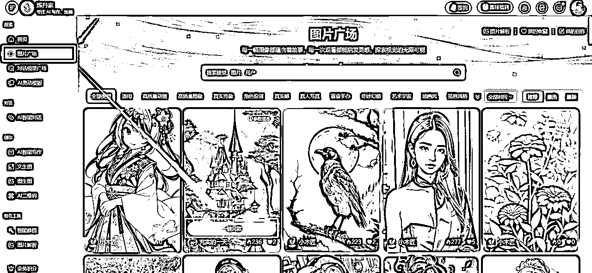
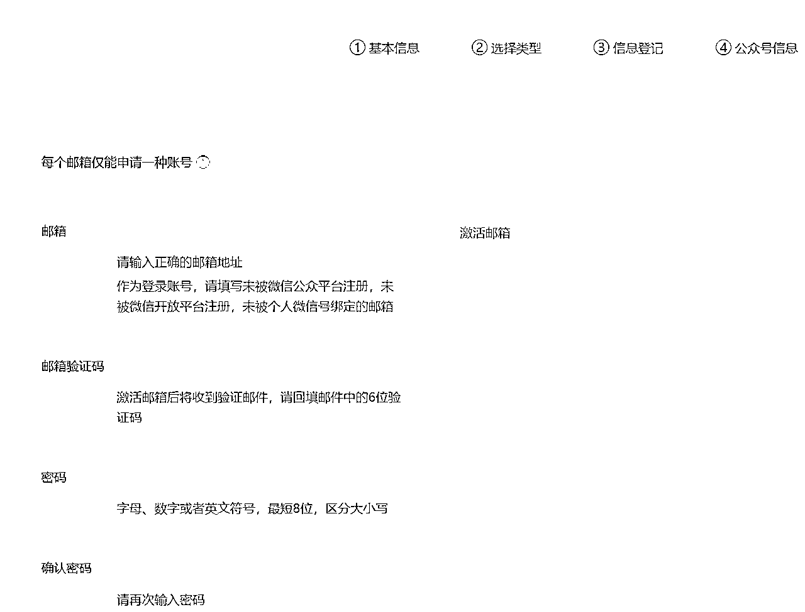

来源：https://i23vi4cvyf.feishu.cn/docx/PCivd0U5Yo3ZHDxfPBZctADVnSc
大家好，我是柒。（也可以叫我晓智），炼丹家AI 工具创始人，专注 AI 写作、绘画，经营相关用户体量 10 万+
科技类公众号现在效益整体有所下滑，但是红利期还没过，可以通过 AI 把时间成本可以降下来，矩阵效率提起来。
下面顺着聊聊科技软件公众号运营体系，重点是快速编写软件合集文的详细案例，在第四章：软件文内容速成篇。
文章2000字左右，可轻松阅读~
①背景介绍：科技软件类账号在微信公众号目前发展趋势平缓，得高效去堆价值内容，不然很难促进用户增长。
②公众号运营的重要性：提升内容质量、IP账号影响力，吸引潜在用户成为自己的忠实用户。
③本文目的：分享科技软件公众号高效运营策略，助力那些觉得写软件文越来越没劲，难产的，还有想把时间省出来的，做大量矩阵的号主，也更快持续迭代复盘实现高阅读量。
①明确目标受众：互联网小白居多、爱好科技新鲜资讯、喜欢黑科技软件及技巧、年轻人居多、爱搞钱、执行力强、敏感度高、付费意识低。
②设定内容方向：实用软件、AI、副业变现、软件教程、科技动态等。
③彰显特色：保姆级推文、内容丰富，更能促进用户互动、收藏。
①实用软件：软件合集，直观清晰介绍，提升内容全面性。
②AI：紧跟 AI 热门案例分享，工具使用或技术实操等。
③副业变现：热门的保姆级副业教程，越全越好，让用户感受到副业的真实性，离自己近。
④软件教程：热门的软件教程，越全越好，解决实际问题。
⑤科技动态：关注科技行业动态，把握时事热点，提供有个人深度的角度分析，提升内容价值。
对标账号：科技软件博主，重点软件合集文，对用户来讲单篇价值高。
注：图只是参考，没有指向账号，直接微信、知乎搜一搜关键字：黑科技软件、xx款软件等等，太多了。
标题创作：撰写具有吸引力的标题，大多都是标题党+吸睛封面为主。
软件文章标题党
示例入口：炼丹家AI - AI灵动模板 - 科技软件标题党
公众号封面图：900 x 383
①炼丹家AI - 图片广场，找到自己感兴趣的风格。
②点击一键同款。

③主要修改尺寸（900 x 383）、数量（更好筛选到想要的）
注：更多还可以自定义修改AI绘画模型、提示词参数等。
前言创作：简洁明了，条理清晰，适当可带点情绪，人味相关，打造 IP 感。
软件文章前言助手
示例入口：炼丹家AI - AI灵动模板 - 软件文章前言助手
内容创作：逻辑清晰，层次分明，文笔没那么好，就直接给用户想要的内容。
注：写手可以搜集软件相关介绍文案，直接提取输出完整文；提示词深度定制了，但是我建议还是要人工再做润色调整，提效的同时，质量也要提。
软件文章内容助手
软件合集示例入口：炼丹家AI - AI灵动模板 - 软件文章内容助手
软件合集示例
软件单款示例
文章结构：标题 - 前言 - 软件模块①、软件模块②...
注：样式示例，网上搜索一大把素材，调成自己喜欢的。
补充说明：①用到的工具，炼丹家AI官网：https://www.liandanjia.com/
②文笔好的，可以慢慢迭代 AI 提示词模板做优化，不会局限的；只是我文笔菜~
①互动策略：积极回复读者留言，增加粉丝粘性。
②互推合作：与其他公众号进行互推，扩大影响力。
③社群运营：建立微信群、QQ群，加强粉丝互动。
④矩阵运营：一个人注册 50 个微信公众号教程如下：
准备工作
在建立一个新微信公众号，你需要准备这些：
①一个新邮箱号（例如：QQ邮箱、网易邮箱、新浪邮箱等，都很方便注册）
②一个手机号（同个手机号可多次使用）
③一个公众号名字（不要平台同名、敏感违规名即可）
④一个身份证号（个人性质可以绑定一个号、个体户性质两个、公司性质可达50个+规则不一定）
⑤一个未注册过公众号并且开通了支付功能的微信号（扫码登录用，有限制一个微信下绑定公众号数量，一般可以10个+）
一、注册订阅号
1.打开微信公众平台网址
网址：https://mp.weixin.qq.com/
2.点击右上角立即注册，选择订阅号类型
根据自己的需求选择一个自己想要的公众号类型。这里我们选“订阅号”。
3.填写信息
基本信息 ——>选择类型（中国大陆）——>信息登记（选择订阅号性质，按需填写）——>公众号信息（填写微信用于登录）

4.到达信息登记页，选择“企业”方式注册。
同一个企业资质，不出意外，可以创 50 个微信公众号。
同一个个体户，可以创 2 个微信公众号。
个人身份证，可以创 1 个微信公众号。
①科技软件公众号运营的核心：现在公众号已经偏向公域，属于半私域的状态，内容为王，着重对待。
②提高阅读量的关键：紧跟热点，打造高质量内容，尤其是数据榜单上，近一个月内，低粉高爆的内容；还有长期都会爆的选题内容。
③高效打造爆款内容：利用 AI 高效铺爆款内容，增加流量、效益。
④变现渠道：广告投放、带货商品、私域变现...现在变现不是难题，大家的重点都是搞流量，一块加油，收获硕果！
⑤方便大家，文中第四章用到的工具，炼丹家AI 官网：https://www.liandanjia.com/
写作模板覆盖大部分场景，大致一览：